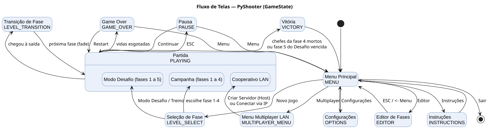
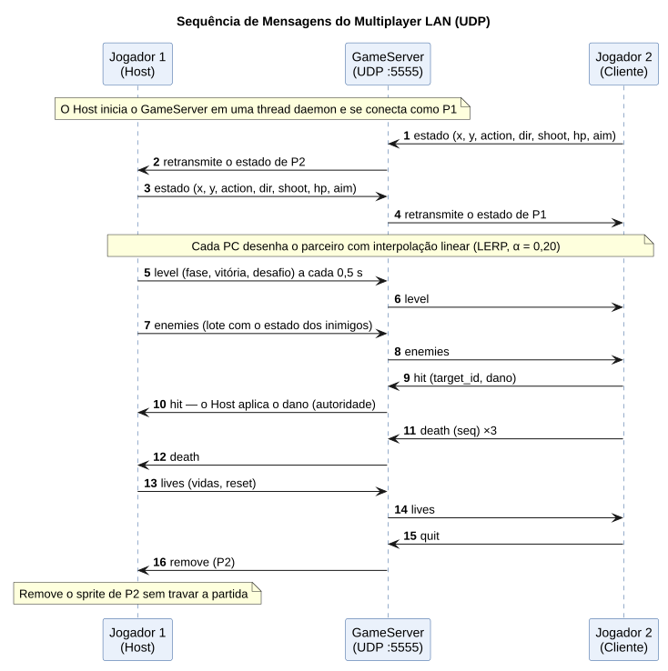
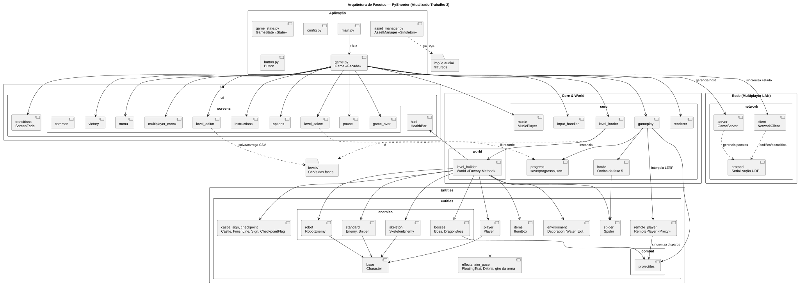
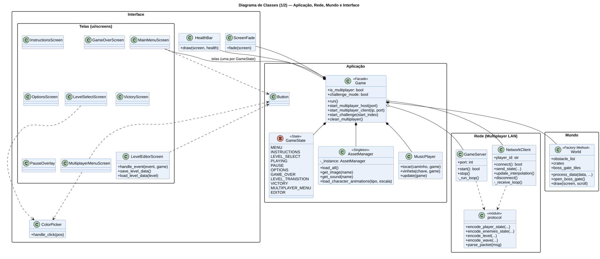
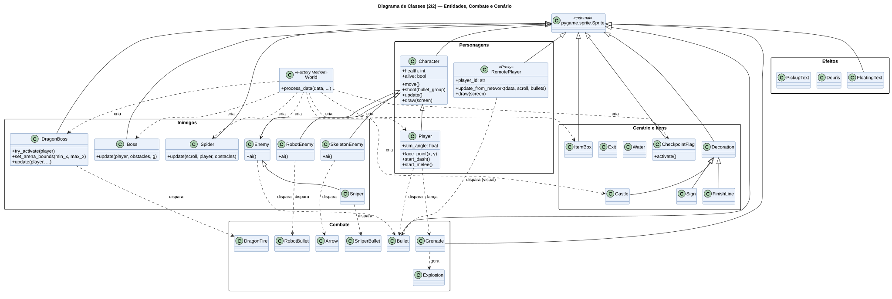

Trabalho 1 + Trabalho 2 · Tópicos Avançados em Computação III · UFGD/FAEN · Prof. Vanderson Hafemann Fragal
Desenvolvedores:
Guilherme Silva Sampaio: Correções de arquitetura, multiplayer LAN (UDP/threads), editor de fases integrado, padrões de projeto, criação e revisão do GDD, geração UML, refatoração e testes.
Pedro Henrique Gonçalves Mota: Criação do projeto base, obtenção dos assets para o jogo, mecânicas de gameplay, chefes e fases, criação e revisão do GDD.
PyShooter é um jogo de ação 2D side-scrolling onde o jogador assume o papel de um soldado em uma missão de combate através de terrenos naturais hostis: florestas de pinheiros, pântanos e montanhas nevadas. O jogador avança horizontalmente por fases, enfrentando soldados, snipers, robôs, esqueletos, aranhas e dois chefes (Demônio e Dragão), coletando suprimentos (munição, granadas, kits médicos e vidas extras) e superando obstáculos como plataformas elevadas, corpos d'água e caixas de madeira. O objetivo é sobreviver e chegar à saída de cada fase até derrotar os chefes da fase 4.
No Trabalho 2 o jogo ganhou: navegação completa por menus, editor de fases integrado, multiplayer cooperativo em LAN (UDP + threads), padrões de projeto formalizados, mira com o mouse, dash, golpe, sistema de vidas, checkpoints, pontuação com combo, Modo Desafio com arena de hordas, tela cheia e trilha sonora por fase.
| Aspecto | Classificação |
|---|---|
| Gênero primário | Run and Gun / Platformer Shooter 2D |
| Subgênero | Side-scrolling Action / Cooperativo em LAN |
| Perspectiva | Vista lateral (side-view) |
| Referências clássicas | Metal Slug, Contra, Ghosts 'n Goblins |
O jogo se encaixa no gênero Run and Gun 2D: o jogador se move horizontalmente, pula entre plataformas e dispara contra inimigos enquanto avança. Não há elementos de puzzle significativos, reforçando o foco na ação direta.
| Requisito | Especificação |
|---|---|
| Sistema Operacional | Windows (compatível com qualquer SO que suporte Python + Pygame) |
| Python | 3.10+ |
| Dependências | pygame-ce, Pillow |
| Resolução de tela | 1200 × 640 pixels (editor: 1200 × 740); tela cheia opcional (F11) |
| Periféricos | Teclado e Mouse (mira, tiro, golpe, menus e editor) |
| Rede | LAN (Ethernet, Wi-Fi ou VPN), UDP porta 5555 |
| Hardware mínimo | Qualquer PC capaz de rodar Python; sem exigências de GPU dedicada |
Controles de Jogo (In-Game)
| Tecla | Ação |
|---|---|
| A ou ← | Mover para a esquerda |
| D ou → | Mover para a direita |
| W ou ↑ | Pular |
| Mouse | Mirar (a arma gira acompanhando o cursor) |
| Botão esquerdo | Atirar na direção da mira (segurar para tiro contínuo) |
| Botão direito | Golpe com a arma (curto alcance; quebra caixas) |
| Espaço | Dash (impulso rápido com invencibilidade) |
| Q ou G | Lançar granada |
| E | Ler placa próxima |
| F11 | Ligar/desligar tela cheia |
| ESC | Pausar |
Controles de Menu
| Periférico | Ação |
|---|---|
| Mouse (clique esquerdo) | Botões dos menus, seleção de fase, seletor de cor, campo de IP e sliders de volume |
| Ctrl+V | Colar o IP do Host no Menu Multiplayer |
Controles do Level Editor
| Tecla | Ação |
|---|---|
| ← / → | Scroll do mapa no editor |
| ↑ / ↓ | Mudar número do nível |
| Shift | Aumentar velocidade do scroll (5x) |
| Mouse esquerdo | Pintar tile selecionado |
| Mouse direito | Apagar tile |
| M | Modo Mover (arrasta um objeto; troca de lugar se a célula estiver ocupada) |
| Ctrl+Z / Ctrl+Y | Desfazer / Refazer (até 100 passos) |
| Botões Salvar / Carregar | Grava ou lê levels/levelN_data.csv |
| ESC | Voltar ao menu |
| Habilidade | Descrição | Parâmetros |
|---|---|---|
| Movimento | Caminhar em ambas as direções | Velocidade: 5 px/frame |
| Pulo | Pulo simples (sem pulo duplo) | Impulso: -14; gravidade: 0.75 |
| Tiro | Projétil na direção da mira do mouse | Cooldown: 20 frames; dano: 25 HP (inimigos), 5 HP (jogador); munição inicial: 20 |
| Granada | Arremesso em arco parabólico | Dano: 50 HP em área; raio: 2 tiles; timer: 100 frames; estoque inicial: 5 |
| Dash | Impulso horizontal sem gravidade e invencível | 16 px/frame por 10 frames; recarga: 50 frames |
| Golpe | Ataque corpo a corpo com a arma | Alcance: 60 px; dano: 35; recarga: 24 frames |
| Coleta de itens | Pegar caixas de suprimentos | Vida: +25 HP, Munição: +15, Granadas: +3, Coração: +1 vida |
| Vidas | Equipe com vidas compartilhadas | 3 vidas (máx. 5); renasce em 1 s no início ou na última bandeira |
| Inimigo | Comportamento | Pontos |
|---|---|---|
| Soldado | Patrulha e atira em linha reta ao ver o jogador | 100 |
| Sniper | Tiro de longo alcance | 200 |
| Robô | Disparo de energia vetorial | 150 |
| Esqueleto | Flechas teleguiadas (trigonometria) | 150 |
| Aranha | Desenhada pelo código; persegue e fere por contato (10 de dano) | 50 |
| Demônio (chefe) | Terrestre de curto alcance; Arena 1 da fase 4 | 1500 |
| Dragão (chefe) | Voador; dorme na Arena 2 e acorda com o jogador perto; leque de 5 tiros e rajada de 3; com metade da vida entra em Fúria (mais rápido, mergulho rasante) | 2000 |
| Elemento | Regra |
|---|---|
| Campanha | Fases 1 a 4. As fases 1 a 3 terminam em um castelo; a fase 4 termina ao matar os dois chefes (tela de Vitória). Fases vencidas ficam salvas em save/progresso.json. |
| Arena dos Chefes (fase 4) | Um portão (tile 90) divide a fase: o Demônio na Arena 1; ao morrer, o portão explode ("PASSAGEM LIBERADA!") e o Dragão desperta na Arena 2. |
| Checkpoints | Bandeira (tile 88) salva posição, munição e granadas; ao perder vida o jogador renasce nela. |
| Modo Desafio | Liberado após zerar a campanha: fases 1 a 5 seguidas, uma vida, sem checkpoints, cronômetro e recorde de tempo. Treino a partir de qualquer fase (sem recorde). |
| Arena de Hordas (fase 5) | 5 ondas pelos dois lados, 3 s de pausa e suprimentos entre elas, os dois chefes na última. Após 8 s sem matar, uma seta aponta o inimigo mais próximo. |
| Cooperativo LAN | 2 jogadores, vidas compartilhadas, colisão entre os soldados (um sobe na cabeça do outro), cores diferentes. |
| Pontuação | Pontos por inimigo × combo (até x5); o combo continua se a próxima morte for em até 2,5 s. |
| Drops | Inimigos soltam munição (25%), vida (10%) e granada (8%); caixas de madeira soltam munição, granada, vida, coração ou aranha. Sorteio determinístico (igual nos dois PCs). |
Personagens (Spritesheet por frames individuais)
| Entidade | Animações | Frames por animação | Escala |
|---|---|---|---|
| Player (img/player/) | Idle, Run, Jump, Death | 5, 6, 1, 8 | 1.55x (5 cores) |
| Enemy (img/enemy/) | Idle, Run, Jump, Death | Mesma estrutura | 1.65x |
| SkeletonEnemy (img/skeleton/) | Idle, Run, Shoot, Death | 7, 8, 14, 5 | 1.65x |
| RobotEnemy (img/robot/) | Idle, Walk, Attack, Death, Hurt | 4, 4, 4, 4, 2 | 1.55x |
| SniperEnemy (img/sniper/) | Idle, Walk, Shot_1, Dead, Hurt | 7, 8, 4, 5, 4 | 1.2x |
| DemonBoss (img/enemy/Demon/) | Idle, Walk, Attack, Death | 3, 6, 4, 6 | 1.5x |
| DragonBoss (img/enemy/Dragon/) | Idle, Walk, Attack, Hurt, Death | 3, 5, 4, 2, 5 | 1.5x |
| Spider | Desenhada pelo código (sem sprite) | — | — |
Cenário e Tiles
| ID do Tile | Tipo | Função no jogo |
|---|---|---|
| 0–8, 24–35, 47–48, 50, 58–61, 65–66, 73–77, 83–84 | Obstáculos sólidos | Plataformas e paredes (terra, neve, pedra e grama) |
| 9–10, 37–39, 42–46, 51–57, 62–64, 67–68 | Água | Mata o jogador/inimigo ao contato |
| 11, 13–14, 36, 40, 49, 71–72, 78–82 | Decoração | Elementos visuais sem colisão |
| 12 | Caixa de madeira | Sólida até levar um golpe; solta um item sorteado |
| 15 / 16 | Spawn do jogador / soldado | Posição inicial |
| 17 / 18 / 19 | Caixas de munição / granada / vida | +15 munição / +3 granadas / +25 HP |
| 20, 41 | Saída (castelo) | Fim da fase, com linha de chegada |
| 22 | Speed Boost | Aumenta a velocidade |
| 23 | Placa | Mostra uma dica (tecla E) |
| 69 / 70 | Spawn de Robô / Esqueleto | Posição inicial |
| 85 | Rampa | Colisão diagonal |
| 86 / 87 | Spawn do Demônio / Dragão | Posição inicial dos chefes |
| 88 | Bandeira de checkpoint | Ponto de renascimento |
| 89 | Spawn de Aranha | Posição inicial |
| 90 | Portão da arena | Sólido até o Demônio morrer |
Background (Parallax)
| Arquivo | Descrição |
|---|---|
| sky_cloud.png / back.png | Céu (camada mais distante) |
| mountain.png | Silhueta de montanhas |
| pine1.png / pine2.png | Pinheiros distantes e próximos |
| background4.png | Floresta e pântano (fase 4 / arena dos chefes) |
Ícones, Projéteis e UI
| Arquivo | Uso |
|---|---|
| bullet.png / grenade.png | Projéteis e indicadores do HUD |
| health_box.png / ammo_box.png / grenade_box.png / speed_box.png | Caixas de itens |
| heartDisplay.png | Coração (+1 vida) e marcador de vidas |
| Ball1.png / Ball2.png | Projétil de energia do Robô |
| Fire_Attack1–6.png | Projétil de fogo do Dragão |
| exp1.png – exp5.png | Animação de explosão |
| gamepad1–4.png | Botões da Seleção de Fase |
| slider_base.png / slider_knob.png | Sliders de volume |
| *_button_new.png, pause_button.png | Botões dos menus e de pausa |
| save_btn.png / load_btn.png | Botões do Level Editor |
| Arquivo | Tipo | Volume | Uso |
|---|---|---|---|
| shot.wav | SFX | 0.05 | Disparo |
| jump.wav | SFX | 0.05 | Pulo |
| grenade.wav | SFX | 0.05 | Explosão de granada |
| robot_shoot.wav | SFX | 0.05 | Disparo do Robô |
| skeleton_bow.wav | SFX | 0.05 | Flecha do Esqueleto |
| audio/musicas/*.ogg (14 faixas) | Música | slider | Uma por tela/fase (menu, fases 1-3, chefes e versão Climax, hordas, vitória, Game Over) e vinhetas; troca com fade |
Músicas: MintoDog (OpenGameArt), licença CC0. Créditos em audio/CREDITOS.md.
A navegação usa o padrão State: o enum GameState define a tela atual e cada tela de ui/screens/ trata seus eventos e seu desenho.

| Tela | Função |
|---|---|
| Menu Principal | Novo Jogo, Multiplayer, Editor, Instruções, Configurações e Sair |
| Seleção de Fase | Fases 1 a 4 (concluídas em verde), seletor de cor, Modo Desafio e Treino |
| Menu Multiplayer | Criar Servidor (Host) ou Conectar via IP; seletor de cor |
| Configurações | Volume da música e dos efeitos (sliders) e tela cheia |
| HUD | Vida, munição, granadas, vidas, pontos, combo, mira e recarga do dash |
| Pausa / Game Over / Vitória | Continuar ou sair; Restart; tempo da partida e recorde |
| Item | Especificação |
|---|---|
| Classe | LevelEditorScreen (ui/screens/level_editor.py), integrada ao menu |
| Mapa | Matriz 16 linhas × 200 colunas, tiles de 40 × 40 px |
| Paleta | 91 tiles em 7 colunas |
| Ferramentas | Pintar, apagar, Modo Mover, Desfazer/Refazer (100 passos) |
| Arquivos | Salva e carrega levels/levelN_data.csv |
Arquitetura cliente/servidor com sockets UDP e threads em segundo plano, baseada nos exemplos da disciplina. O Host roda o GameServer (porta 5555) e é a autoridade sobre inimigos, fase e vidas; cada PC desenha o parceiro com interpolação linear (LERP).

| Mensagem | Sentido | Conteúdo |
|---|---|---|
| estado | todos | id,x,y,action,dir,shoot,hp,aim |
| quit / remove | cliente → servidor → todos | Saída voluntária / expulsão por timeout de 5 s |
| hit | quem acertou → Host | target_id, dano (o Host aplica o dano) |
| enemies / eshoot | Host → cliente | Lote com o estado dos inimigos / tiro de inimigo |
| level / levelreq | Host → cliente / cliente → Host | Fase atual, vitória e desafio / pedido de troca de fase |
| item / crate | todos | Item coletado / caixa quebrada |
| color | todos | Cor escolhida pelo jogador |
| death / lives / lifeup | cliente → Host / Host → cliente | Morte, saldo de vidas e vida extra |
| wave | Host → cliente | Início de cada onda da fase 5 |
| Padrão | Onde | Para quê |
|---|---|---|
| Singleton | AssetManager |
Carregar imagens e sons uma única vez |
| State | GameState + telas de ui/screens/ |
Separar menus, partida, editor e pausa |
| Factory Method | World.process_data() |
Criar entidades a partir dos IDs da matriz CSV |
| Facade | Game + core/ |
Orquestrar entrada, gameplay, renderização e carregamento de fases |
| Observer | Laço de eventos e NetworkClient._receive_loop |
Tratar eventos e pacotes sem travar os 60 FPS |
| Remote Proxy | RemotePlayer |
Representar o jogador remoto como um sprite local |
Aplicada ao Jogador, Inimigos, Caixas e Granadas: a cada frame a gravidade é somada à velocidade vertical, limitada à velocidade terminal.
Os inimigos decidem atirar ou seguir medindo a distância entre os centros do jogador e do inimigo (math.hypot).
Usada nas flechas dos Esqueletos, no fogo do Dragão e no tiro do jogador (mira no mouse).
Só a arma gira (o corpo fica parado), limitada a ±89°. A ponta do cano, de onde sai a bala, é obtida pela rotação 2D em torno da empunhadura:
A posição exibida do parceiro anda 20% em direção à posição recebida a cada frame, evitando "teleportes":
O multiplicador c sobe 1 a cada morte feita em até 150 frames (2,5 s) da anterior e volta a 1 quando o tempo acaba.
| ID | Requisito |
|---|---|
| RF-01 | O sistema deve permitir que o jogador se mova horizontalmente utilizando as teclas A/D ou setas direcionais. |
| RF-02 | O sistema deve permitir que o jogador pule ao pressionar W ou seta para cima, aplicando gravidade simulada. |
| RF-03 | O sistema deve permitir que o jogador dispare projéteis na direção da mira com o botão esquerdo do mouse, com cooldown de 20 frames e consumo de munição. |
| RF-04 | O sistema deve permitir que o jogador lance granadas (Q/G) em trajetória parabólica, que explodem após um timer e causam dano em área. |
| RF-05 | O sistema deve detectar colisão entre projéteis e personagens, aplicando dano diferenciado (25 HP em inimigos, 5 HP no jogador). |
| RF-06 | O sistema deve carregar fases a partir de arquivos CSV (levelN_data.csv), interpretando uma matriz 16×200 de IDs de tiles. |
| RF-07 | O sistema deve implementar IA para inimigos com patrulha, detecção do jogador e ataque. |
| RF-08 | O sistema deve permitir a coleta de itens (vida +25, munição +15, granadas +3, coração +1 vida). |
| RF-09 | O sistema deve exibir HUD com vida, munição, granadas, vidas, pontos e combo. |
| RF-10 | O sistema deve transicionar entre as fases ao jogador alcançar a saída, com efeito de fade. |
| RF-11 | O sistema deve oferecer menus de Novo Jogo, Multiplayer, Editor, Instruções, Configurações e Sair. |
| RF-12 | O sistema deve permitir ajustar o volume da música e dos efeitos por sliders. |
| RF-13 | O sistema deve oferecer um editor de fases para pintar, apagar, mover, desfazer/refazer e salvar/carregar CSV. |
| RF-14 | O sistema deve permitir criar um servidor LAN UDP na porta 5555 (modo Host). |
| RF-15 | O sistema deve permitir conectar a uma partida pelo IP do Host (modo Cliente). |
| RF-16 | O sistema deve sincronizar posição, ação, direção, mira e tiros entre os jogadores, suavizando com LERP. |
| RF-17 | O sistema deve encerrar a campanha com tela de Vitória ao derrotar os dois chefes da fase 4. |
| RF-18 | O sistema deve salvar fases concluídas, campanha zerada, cor, tela cheia e recorde em save/progresso.json. |
| RF-19 | O sistema deve registrar checkpoints (tile 88) e renascer o jogador na última bandeira ativada. |
| RF-20 | O sistema deve oferecer o Modo Desafio (fases 1 a 5, uma vida, cronômetro e recorde). |
| RF-21 | O sistema deve manter Host e Cliente na mesma fase e levá-los juntos à Vitória. |
| RF-22 | O sistema deve girar a arma do jogador acompanhando o cursor do mouse. |
| RF-23 | O sistema deve permitir o dash (Espaço) com invencibilidade e recarga de 50 frames. |
| RF-24 | O sistema deve controlar 3 vidas compartilhadas (até 5), com renascimento em 1 s sem recarregar a fase. |
| RF-25 | O sistema deve permitir o Modo Desafio em dupla, com espectador para quem cair e fim quando os dois caírem. |
| RF-26 | O sistema deve dividir a fase 4 em duas arenas por um portão, que abre quando o Demônio morre; o Dragão acorda com a aproximação e entra em Fúria com metade da vida. |
| RF-27 | O sistema deve pontuar cada inimigo com multiplicador de combo (até x5) e soltar suprimentos de forma determinística. |
| RF-28 | O sistema deve permitir escolher a cor do soldado, sem cores repetidas na dupla. |
| RF-29 | O sistema deve permitir ler placas (E) e ter colisão entre os dois jogadores. |
| RF-30 | O sistema deve terminar as fases 1 a 3 em um castelo com linha de chegada. |
| RF-31 | O sistema deve permitir o golpe com a arma (botão direito), que fere inimigos e quebra caixas. |
| RF-32 | O sistema deve ter caixas de madeira quebráveis com conteúdo sorteado igual nos dois PCs. |
| RF-33 | O sistema deve ter o inimigo Aranha (tile 89, caixas e hordas). |
| RF-34 | O sistema deve ter a arena de hordas na fase 5 do Desafio (5 ondas, chefes na última). |
| RF-35 | O sistema deve mostrar uma seta para o inimigo mais próximo após 8 s sem matar na arena de hordas. |
| RF-36 | O sistema deve permitir treinar o Desafio a partir de qualquer fase, sem gravar recorde. |
| RF-37 | O sistema deve oferecer tela cheia (F11) e música por tela/fase com fade. |
| ID | Requisito |
|---|---|
| RNF-01 | Desempenho: O jogo deve manter taxa de quadros estável de 60 FPS. |
| RNF-02 | Portabilidade: O jogo deve rodar em qualquer sistema operacional com Python 3.10+ e Pygame. |
| RNF-03 | Usabilidade: O carregamento de uma fase deve ser imperceptível (< 1 segundo), com assets carregados na inicialização. |
| RNF-04 | Manutenibilidade: Os níveis devem ser editáveis pelo editor sem alterar código-fonte; responsabilidades separadas por módulo. |
| RNF-05 | Consumo de Memória: Assets carregados uma única vez (Singleton) e sprites limpos via kill() e Group.empty(). |
| RNF-06 | Rede: Pacotes UDP pequenos (< 128 bytes) para baixa latência em LAN. |
| RNF-07 | Tolerância a falhas: Desconexão por timeout após 5 s sem travar o jogo. |
Descrição da Estrutura:
O projeto adota uma arquitetura modularizada, separando ciclo de vida, rede, lógica de mundo, entidades e interface gráfica:
main.py), fachada Game (game.py), máquina de estados GameState, configurações (config.py), AssetManager e Button.network/ com GameServer, NetworkClient e o módulo protocol (codificação dos pacotes).core/: entrada (input_handler), regras (gameplay), carregamento de níveis (level_loader), renderização (renderer), hordas (horde), progresso salvo (progress) e música (music).world/: World (level_builder), que processa as matrizes CSV.base (Character), player, remote_player, enemies (standard, robot, skeleton, bosses), spider, combat (projectiles), items, environment, castle, sign, checkpoint, effects e aim_pose.hud, transitions e screens (menu, level_select, multiplayer_menu, level_editor, instructions, options, pause, game_over, victory, common).levels/ (CSV), img/, audio/ e save/.
Análise da Orientação a Objetos:
A classe Game gerencia o GameState, o AssetManager, o World, o Player, as telas, a música e, no multiplayer, o GameServer e o NetworkClient. Todas as entidades derivam de pygame.sprite.Sprite; Character é a base de Player e dos inimigos comuns.
Relacionamentos-Chave:
| Relacionamento | Tipo | Descrição |
|---|---|---|
| Game → GameState | Composição | Estado atual da aplicação (telas e partida). |
| Game → AssetManager | Composição | Carregamento centralizado de imagens e sons. |
| Game → World | Composição | Nível atual do jogo. |
| Game → Telas | Agregação | Uma tela de ui/screens/ para cada estado. |
| Game → GameServer / NetworkClient | Agregação | Existem só no multiplayer. |
| NetworkClient / GameServer → protocol | Uso | Codificam e decodificam os pacotes. |
| Character → pygame.sprite.Sprite | Herança | Base das entidades vivas. |
| Player / Enemy / RobotEnemy / SkeletonEnemy → Character | Herança | Jogador e inimigos comuns (Sniper herda de Enemy). |
| RemotePlayer → Sprite | Herança (Proxy) | Representa o jogador remoto. |
| Castle / FinishLine / Sign → Decoration | Herança | Elementos de cenário especializados. |
| World → Entidades do jogo | Criação (Factory) | process_data() lê o CSV e instancia jogador, inimigos, chefes, aranhas, itens, bandeiras e cenário. |
| Player / Inimigos → Projéteis | Associação Dinâmica | Bullet, SniperBullet, RobotBullet, Arrow, DragonFire e Grenade. |
| Grenade → Explosion | Composição Dinâmica | A granada gera a explosão ao fim do timer. |
| Telas → Button / ColorPicker | Uso | Botões e seletor de cor. |

